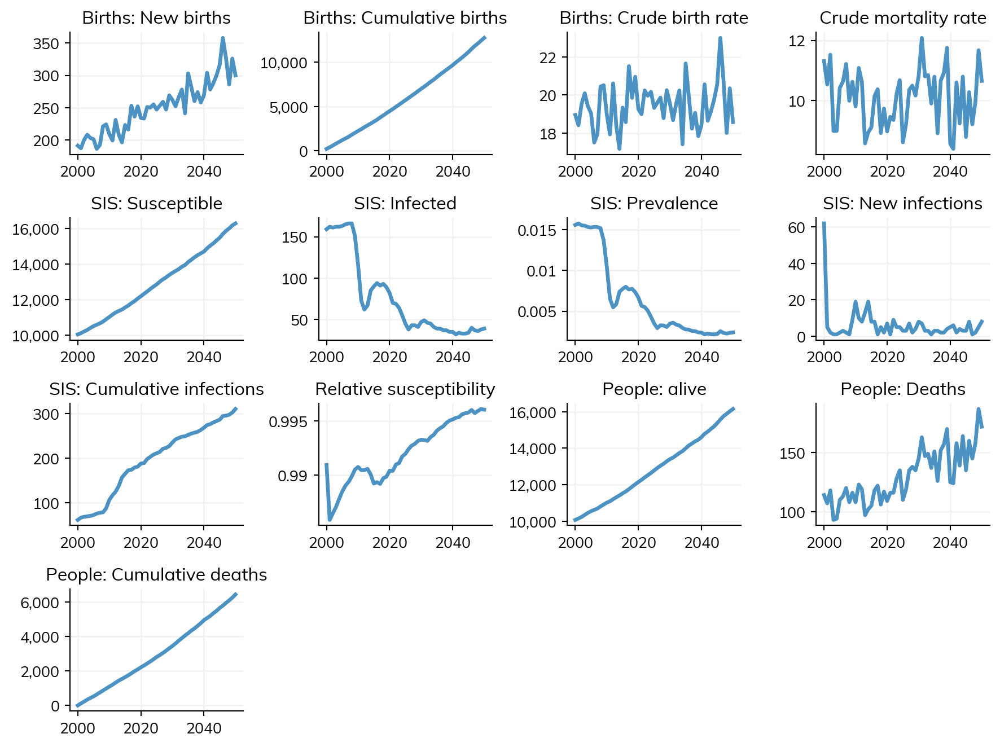
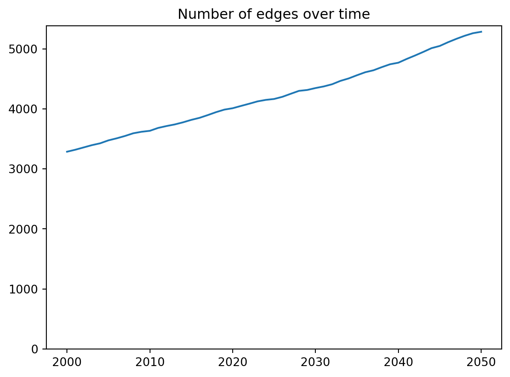
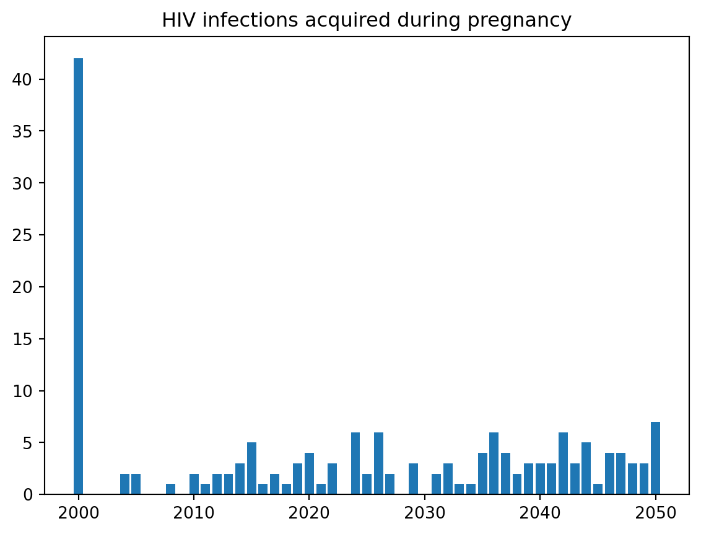
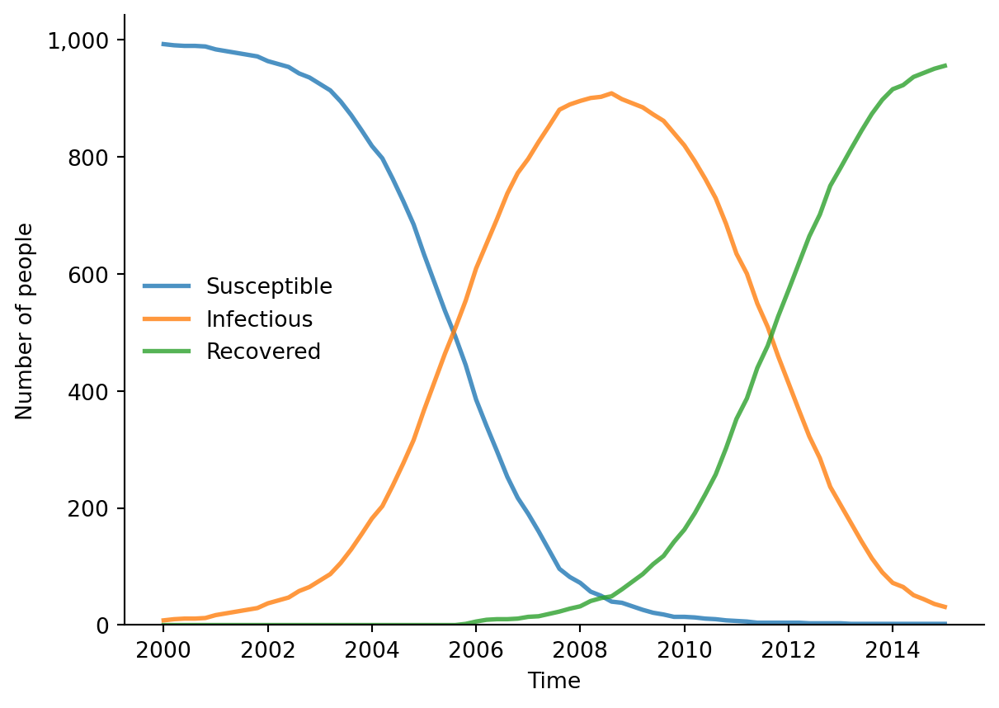

Each Starsim module can have its own results, which get added to the full list of results in the Sim object. For example, the ss.Pregnancy module adds results like sim.results.pregnancy.pregnant, and the ss.HIV module adds results like sim.results.hiv.new_infections. If you are writing your own module, you can add whatever custom results you want. However, another option is to create an Analyzer to store results that you might need for one particular analysis but won’t need all the time. An Analyzer is very similar to other Starsim modules in its structure, but the general idea of an analyzer is that it gets called at the end of a timestep, and reports of the state of things after everything else has been updated without changing any of the module states itself.
Simple usage
For simple reporting, it’s possible to use a single function as an analyzer. In this case, the function receives a single argument, sim, which it has full access to. For example, if you wanted to know the number of connections in the network on each timestep, you could write a small analyzer as follows:
import numpy as npimport starsim as ssimport matplotlib.pyplot as pltss.options(jupyter=True)# Store the number of edgesn_edges = []def count_edges(sim):""" Print out the number of edges in the network on each timestep """ network = sim.networks[0] # Get the first network n =len(network) n_edges.append(n)print(f'Number of edges for network {network.name} on step {sim.ti}: {n}')return# Create the simpars =dict( diseases ='sis', networks ='mf', analyzers = count_edges, demographics =True,)# Run the simsim = ss.Sim(pars).run()sim.plot()# Plot the number of edgesplt.figure()plt.plot(sim.timevec, n_edges)plt.title('Number of edges over time')plt.ylim(bottom=0)plt.show()
Initializing sim with 10000 agents
Running 2000.01.01 ( 0/51) (0.00 s) ———————————————————— 2%
Number of edges for network mfnet on step 0: 3286
Number of edges for network mfnet on step 1: 3331
Number of edges for network mfnet on step 2: 3372
Number of edges for network mfnet on step 3: 3416
Number of edges for network mfnet on step 4: 3436
Number of edges for network mfnet on step 5: 3469
Number of edges for network mfnet on step 6: 3495
Number of edges for network mfnet on step 7: 3533
Number of edges for network mfnet on step 8: 3599
Number of edges for network mfnet on step 9: 3623
Running 2010.01.01 (10/51) (0.30 s) ••••———————————————— 22%
Number of edges for network mfnet on step 10: 3648
Number of edges for network mfnet on step 11: 3671
Number of edges for network mfnet on step 12: 3710
Number of edges for network mfnet on step 13: 3745
Number of edges for network mfnet on step 14: 3775
Number of edges for network mfnet on step 15: 3796
Number of edges for network mfnet on step 16: 3837
Number of edges for network mfnet on step 17: 3873
Number of edges for network mfnet on step 18: 3921
Number of edges for network mfnet on step 19: 3951
Running 2020.01.01 (20/51) (0.47 s) ••••••••———————————— 41%
Number of edges for network mfnet on step 20: 3977
Number of edges for network mfnet on step 21: 4014
Number of edges for network mfnet on step 22: 4048
Number of edges for network mfnet on step 23: 4085
Number of edges for network mfnet on step 24: 4118
Number of edges for network mfnet on step 25: 4144
Number of edges for network mfnet on step 26: 4176
Number of edges for network mfnet on step 27: 4221
Number of edges for network mfnet on step 28: 4267
Number of edges for network mfnet on step 29: 4300
Running 2030.01.01 (30/51) (0.55 s) ••••••••••••———————— 61%
Number of edges for network mfnet on step 30: 4340
Number of edges for network mfnet on step 31: 4383
Number of edges for network mfnet on step 32: 4432
Number of edges for network mfnet on step 33: 4473
Number of edges for network mfnet on step 34: 4517
Number of edges for network mfnet on step 35: 4564
Number of edges for network mfnet on step 36: 4612
Number of edges for network mfnet on step 37: 4654
Number of edges for network mfnet on step 38: 4716
Number of edges for network mfnet on step 39: 4762
Running 2040.01.01 (40/51) (0.63 s) ••••••••••••••••———— 80%
Number of edges for network mfnet on step 40: 4784
Number of edges for network mfnet on step 41: 4847
Number of edges for network mfnet on step 42: 4889
Number of edges for network mfnet on step 43: 4924
Number of edges for network mfnet on step 44: 4974
Number of edges for network mfnet on step 45: 5016
Number of edges for network mfnet on step 46: 5086
Number of edges for network mfnet on step 47: 5130
Number of edges for network mfnet on step 48: 5180
Number of edges for network mfnet on step 49: 5230
Running 2050.01.01 (50/51) (0.71 s) •••••••••••••••••••• 100%
Number of edges for network mfnet on step 50: 5266
Figure(896x672)


Advanced usage
Suppose we wanted to create an analyzer that would report on the number of new HIV infections in pregnant women:
import starsim as ssimport starsim_examples as sseimport pandas as pdclass HIV_preg(ss.Analyzer):def__init__(self, *args, **kwargs):super().__init__(*args, **kwargs)returndef init_results(self):super().init_results()self.define_results( ss.Result('new_infections_pregnancy'), )returndef step(self): sim =self.sim ti = sim.ti hiv = sim.diseases.hiv pregnant = sim.demographics.pregnancy.pregnant newly_infected = hiv.ti_infected == tiself.results['new_infections_pregnancy'][ti] =len((newly_infected & pregnant).uids)returnpregnancy = ss.Pregnancy(fertility_rate=pd.read_csv('test_data/nigeria_asfr.csv'))hiv = sse.HIV(beta={'mfnet':[0.5,0.25]})sim = ss.Sim(diseases=hiv, networks='mfnet', demographics=pregnancy, analyzers=HIV_preg())sim.run()print(f'Total infections among pregnant women: {sim.results.hiv_preg.new_infections_pregnancy.sum()}')
Analyzers are ideal for adding custom results, and because they get added to the sim in the same way as any other result, they also get automatically exported in the same format, e.g. using sim.to_df().
Here’s a plot of the results from our HIV in pregnancy analyzer:
import matplotlib.pyplot as pltres = sim.results.hiv_pregplt.figure()plt.bar(res.timevec.years, res.new_infections_pregnancy)plt.title('HIV infections acquired during pregnancy')plt.show()

Built-in analyzers
Starsim comes with two built-in analyzers, an infection log and an age analyzer.
Infection log
The infection log produces a line list of infections. It’s integrated into the logic of ss.Disease in order to track infection sources and targets, which are not kept beyond this (for memory reasons).
You can see how this raster plot aligns with the peak of infections:
sim.diseases.sir.plot()
Figure(672x480)

(Note: ss.infection_log() also has an .animate() method, which we will leave for you to try out!)
Dynamics by age
This analyzer illustrates how you could track infections by age. Since it illustrates some additional key principles of building analyzers, here it is in full:
Since we are using a random network, we wouldn’t expect any differences in transission by age, so what you’re seeing here is the difference in age bin size.